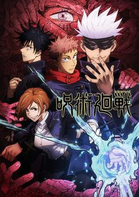
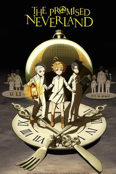
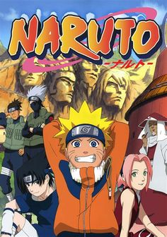
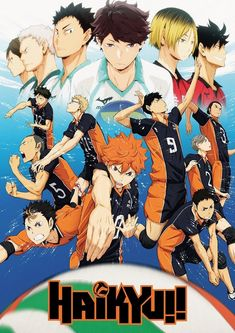
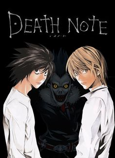
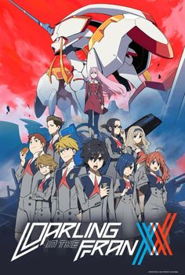
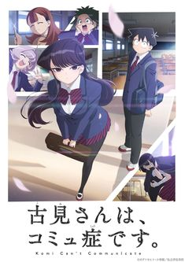

Animes
-

Jujutsu Kaisen
Dificultades, arrepentimiento, vergüenza… Los sentimientos negativos de los humanos se convierten en Maldiciones que nos acechan en nuestra vida diaria. Las Maldiciones campan a sus anchas por todo el mundo, y pueden llevar a las personas a sufrir terribles desgracias e incluso dirigirlas a su muerte. Y lo que es peor: solo una Maldición puede exorcizar otra Maldición.
Last updated 3 mins ago
-

The Promised Neverland
Por mucho que los niños la quieran, ella no es su madre. Viven juntos, pero no son familiares de sangre. Grace Field es un hogar al que son enviados los niños que no tienen padres. Un hogar irreemplazable para los 38 niños que allí viven felices su día a día, como si fueran hermanos, aunque al inicio fueran completos desconocidos. Al menos así era hasta que cierto descubrimiento cambió sus vidas por completo...
Last updated 3 mins ago
-
Demon Slayer: Kimetsu no Yaiba
Estamos en la era Taisho de Japón. Tanjiro, un joven que se gana la vida vendiendo carbón, descubre un día que su familia ha sido asesinada por un demonio. Para empeorar las cosas, su hermana menor Nezuko, la única superviviente de la masacre, ha sufrido una transformación en demonio. Destrozado por los acontecimientos Tanjiro decide convertirse en un cazador de demonios para poder devolver a su hermana a la normalidad y matar al demonio que masacró a su familia.
Last updated 3 mins ago
-

Naruto
Naruto Uzumaki es un niño marginado en la aldea ninja en la que vive. En su interior reside el poder de una bestia que estuvo al borde de destruir el pueblo años atrás, el Kyubi, el zorro de nueve colas, lo que hace que nadie quiera acercarse a él por considerarlo maldito. Pese a su soledad y su tristeza, Naruto quiere ser un ninja, pero no uno cualquiera: quiere ser Hokage, el líder de la aldea. En su camino, sus convicciones atraerán a muchos amigos y compañeros de viaje.
Last updated 3 mins ago
-

Haikyu!!
Basada en el manga original de Haruichi Furudate, el cual se publica en la Weekly Shonen Jump, Haikyu!! es un anime deportivo protagonizado por Shoyo Hinata y su amor por el voleibol. Siendo de corta estatura, le inspira un jugador al que llamaban el "Pequeño Gigante", y decide jugar tal y como lo hizo él.
Last updated 3 mins ago
-

Death Note
Light Yagami es un estudiante brillante con mucho futuro que se aburre a más no poder. Pero todo cambia cuando encuentra la Death Note, un cuaderno que dejó caer un rebelde dios de la muerte.
Last updated 3 mins ago
-

DARLING in the FRANXX
En un futuro distante la humanidad ha creado Plantation, una ciudad fortaleza móvil construida sobre las ruinas del mundo y en la que ha florecido la civilización. En la ciudad hay barracones especiales para pilotos llamados Mistilteinn, aunque popularmente se los conoce como "jaulas de pájaros". Allí es donde viven estos chicos...
Last updated 3 mins ago
-

Komi-san wa, Komyushō desu.
En una escuela llena de personalidades únicas, Tandano ayuda a la tímida e introvertida Komi a alcanzar su meta personal: hacerse amiga de 100 personas.
Last updated 3 mins ago